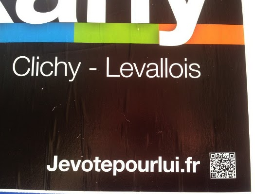
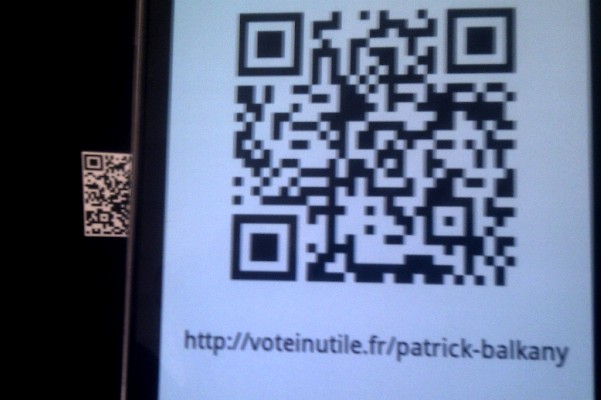
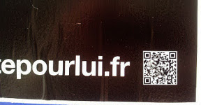

Le guide pour hacker la campagne de Balkany
-
1. Cette affiche de campagne a été hackée, le voyez-vous ?
-

2. Regardons de plus près le QR Code en bas à droite... !
-

3. Que se passe-t-il quand on le scanne ?
-
4. On est renvoyé sur le site non-officiel de la campagne de Balkany :) !
Vous aussi hackez la campagne de Balkany, c'est simple !
Voici la procédure qui vous permettra de découvrir la circonscription de Balkany tout en vous amusant :
- Télécharger le QR Code, disponible en plaquette de 40 (2.8cm x 2.8cm)
- Imprimer cette plaquette
- Découper les QR Codes
- Se munir d'un tube de colle (ou imprimer directement sur papier autocollant)
- Se rendre dans une ville de la 5ème circonsription des Hauts-de-Seine : Clichy (92110), Levallois-Perret (92300)
- Trouver des affiches de Balkany (en affichage libre :))
- Coller sur l'emplacement prévu à cet effet :

- Prendre l'affiche hackée en photo
- Partager la photo sur twitter avec le tag #circo9205 ou envoyer le cliché à voteinutile@gmail.com